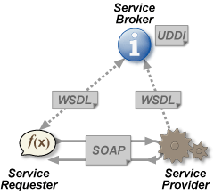

REST (Representational state transfer) - тиль архітектури програмного забезпечення для розподілених систем(World Wide Web), який використовується для побудови веб-служб.
REST - простий інтерфейс для управління інформацією без використання яких небудь внутрішніх прослойок. Кожна одиниця інформації однозначно визначається URL (book/3/page/35). Немає значення в якому форматі знаходяться дані за цією адресою. Управління інформацією відбувається за допомогою HTTP методів: GET,POST,PUT,DELETE.
REST-Patterns по різному зв'язують HTTP методи з тим, що вони роблять(PUT,POST).
Web-служба - порграма, що працює в World Wide Web і доступ до якої надається по HTTP протоколу, а обмін інформацією йде з допомогою формата XML.
Ex. Facebook or Twitter provide web services. This is how app or game can be posted on facebook.
Три інстанції в межах веб-сервера:
Коли служба розроблена, виконавець реєструє її в каталозі, де її може знайти потенційний замовник. Замовник, знайшовши в каталозі відповідну службу, імпортує звідти її WSDL-специфікацію (Web Services Description Language) і у відповідності до неї розробляє своє ПЗ. WSDL описує формат запитів і відповідей, якими обмінюються замовник і виконавець в процесі роботи.
REST stands for REpresentational State Transfer. REST is a web standards based architecture and uses HTTP Protocol for data communication. It revolves around resources where every component is a resource and a resource is accessed by a common interface using HTTP standard methods.
REST Server simply provides access to resources and the REST client accesses and presents the resources. Here each resource is identified by URIs/ Global IDs. REST uses various representations to represent a resource like Text, JSON and XML.
A web service is a collection of open protocols and standards used for exchanging data between applications or systems.
To create web service Java has Jersey framework(implements JAX-RS 2.0 API - standard specification to create RESTful Web Services.). Postman - Chrome extention to test web services.
REST architecture treats every content as a resource.
<protocol>://<service-name>/<ResourceType>/<ResourceID>
Caching refers to storing the server response in the client itself, so that a client need not make a server request for the same resource again and again.
JAX-RS stands for JAVA API for RESTful Web Services.
| @Path | |
| @GET,@PUT,@POST,@DELETE,@HEAD | |
| @Consumes | |
| @PathParam | |
| @QueryParam | |
| @MatrixParam | |
| @HeaderParam | |
| @CookieParam | |
| @FormParam | |
| @DefaultValue | |
| @Context |
JSON-JavaScript Object Notation